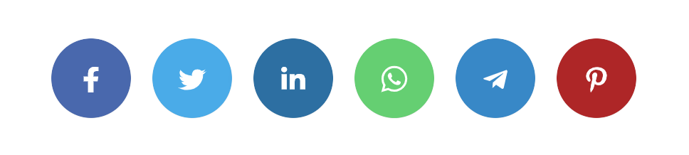

Hva er Universell Utforming?
UU eller universell utforming å få planlegge slik at hva enn du lager skal komme ut til brukerne altså menneskene på en likeverdig måte. Det UU vil er å gjøre slik at produktet, omgivelser, programmer og tjenester skal bli brukt av så mange som mulig. I dags dato er det lovpålagt at nettsiden din er universell utformet. Reglene du må følge heter WCAG og WAD. Hvis du ikke følger disse reglene kan du bli bøtelagt og kan mest sannsynlig ikke legge ut denne nettsiden. WCAG står for Web Content Accessibility guidelines og er noe du må følge for å ha riktig webinnhold, disse retningslinjene kan du finne på nett. WAD står for Web Accessibility Directive og handler om tilgjengeligheten og er EUs sin web direktiv om UU.
Hvordan oppnår man Universell utforming?
Nevnt er det noen retningslinjer man må følge for å oppnå UU. Når du skal oppnå UU for din nettside er noe du må tenke på. Er Nettsiden din rettet mot innbyggere eller kunder i Norge? Hva tilbyr nettsiden din? Er den nylig oppdatert til riktig UU? Dette hjelper folkene som ikke vet om UU har blitt oppnådd eller ikke. Når du skal vite det så må du følge retningslinjer som WCAG forteller deg. Disse må være oppnådd i det året man er i. altså 2022 for oss.
